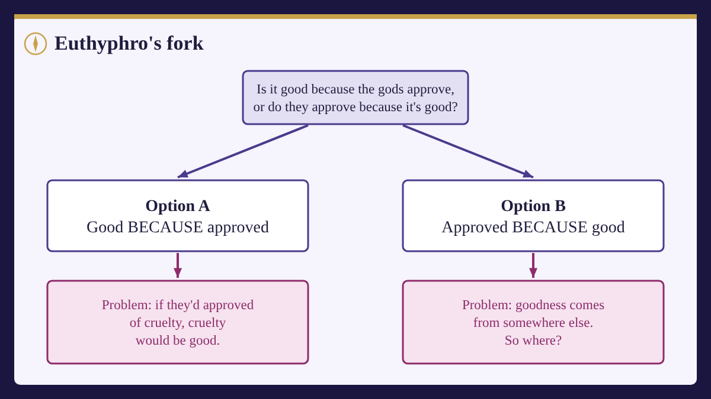

Card 1: Two kinds of question
Imagine two friends arguing.
One says, "You shouldn't have read your sister's diary." The other says, "It was fine, she'll never know." That's an argument inside ethics: two people disagreeing about what someone should do.
Now imagine a third friend leans in and asks: "Wait. When you say it was wrong, what are you even claiming? Is that a fact, like the diary being blue? Is it just how you feel? Who decides?"
That third friend has stepped outside the argument and asked about the argument itself. That's meta-ethics. "Meta" means "about" or "beyond." Ordinary ethics asks what's right. Meta-ethics asks what rightness is, and whether there's any such thing at all.
Card 2: Why it matters
You might think this is a question only philosophers care about. But you rely on an answer to it all the time.
When you say a rule is unfair, you usually mean more than "I don't like it." You mean other people should see it too, as if unfairness were something out there to notice. When you change your mind about something moral, you probably think you got better at seeing it, not just different. And when two cultures disagree, people often wonder whether one of them is mistaken or whether it's simply "different strokes."
Each of those moves takes a side in meta-ethics without saying so. This course drags those hidden sides into the light so you can look at them and decide which ones you actually believe.
Card 3: Four kinds of claims
To get started, it helps to sort the things people say into four bins.
Fact claims say how the world is. They can be checked and are true or false: "Water boils at 100°C at sea level." "Most people in this town own a bike." Notice that second one: a claim about what people believe or do is still a fact claim.
Taste claims state a preference: "Mint chocolate chip is the best ice cream." Nobody thinks you've made a mistake if you prefer strawberry.
Moral claims say what's morally right or wrong, fair or unfair, or how people should treat each other: "Breaking a promise just to get ahead is wrong." Careful: moral-sounding words don't always make a moral claim. "Smoking is bad for you" is about health, so it's a fact claim.
Mixed claims pack more than one kind into a single sentence: "Copying my homework was unfair, and it took me three hours."
The big meta-ethics question hides in the third bin. Moral claims sound like fact claims ("stealing is wrong" has the same shape as "water is wet"). But people disagree about them the way they disagree about taste. So which are they really more like?
Card 4: The main answers, in one breath
Philosophers have given several answers. You'll meet each of them properly over the next sessions, so for now just get a feel for the map.
- Moral realists think some moral claims are true no matter what anyone thinks, the way "2 + 2 = 4" is.
- Relativists think moral claims are true or false only relative to a culture or a person.
- Error theorists think moral claims try to state facts but there are no moral facts, so every one of them is false.
- Expressivists think moral claims aren't trying to state facts at all; they express attitudes, closer to cheering or booing.
Smart, careful people hold every one of these views today. Your job isn't to guess the "right" one. It's to find out which one survives your best reasons.
Card 5: A question from 2,400 years ago
One of the oldest versions of this puzzle comes from Plato's dialogue Euthyphro, set in 399 BCE in the weeks before Socrates' trial.
Socrates is waiting outside the courthouse, about to be tried for "impiety" (disrespecting the gods). He meets Euthyphro, a man so sure he knows what holiness is that he's prosecuting his own father. Socrates, who never lets a confident person off easy, asks him to define it. Euthyphro says holiness is whatever all the gods love. Then Socrates asks the question that has bothered people ever since:
SOCRATES: Ought we to enquire into the truth of this, Euthyphro, or simply to accept the mere statement on our own authority and that of others? What do you say?
EUTHYPHRO: We should enquire; and I believe that the statement will stand the test of enquiry.
SOCRATES: We shall know better, my good friend, in a little while. The point which I should first wish to understand is whether the pious or holy is beloved by the gods because it is holy, or holy because it is beloved of the gods.
EUTHYPHRO: I do not understand your meaning, Socrates.
From Euthyphro by Plato, translated by Benjamin Jowett. This eBook is for the use of anyone anywhere in the United States and most other parts of the world at no cost and with almost no restrictions whatsoever. You may copy it, give it away or re-use it under the terms of the Project Gutenberg License included with this eBook or online at www.gutenberg.org.
Card 6: Why the question is a trap
Euthyphro didn't understand at first, and that's fair: it's a tricky question. Here it is in plain words.
Option A: Something is good because the gods (or some authority) approve of it. Their approval is what makes it good.
Option B: The gods approve of something because it's already good. Its goodness comes first; they're just recognizing it.
Each option causes trouble.
If you pick A, goodness depends entirely on the decision of whoever is in charge. If they had approved of cruelty instead, cruelty would have been good. Most people find that hard to accept.
If you pick B, goodness doesn't come from the authority at all. It comes from somewhere else, and now you have to say where. The authority has become more like a very reliable expert than the source of morality.
Many religious thinkers answer that there's a third path: goodness is part of God's own nature, so God's commands come from that goodness and could never be cruel. Critics ask whether that escapes the fork or quietly picks Option B. Philosophers still argue about it.
You don't have to be religious for this to bite. Swap "the gods" for any authority: the law, your parents, what most people think. Is something wrong because the law forbids it, or does a good law forbid it because it's wrong?

Card 7: Real-world spark:The aimbot test
Most gamers would say using an aimbot in an online match is wrong. Now sort the pieces:
- "Aimbots break this game's rules." That's a fact claim. You can check the rules.
- "Aimbots are boring; winning that way is no fun." That's taste.
- "Using an aimbot is unfair to the other players." That's moral.
Same cheat, three different bins. Here's the meta-ethics question hiding inside: if the game company deleted the rule tomorrow, would aimbots stop being unfair? If your answer is no, you've just sided with Option B of Euthyphro's fork, at least for games.
Card 8: What to carry into the game
Hold on to two things.
- The four bins: fact, taste, moral, mixed. Sorting claims is the first skill in meta-ethics.
- Euthyphro's fork: does an authority make things right, or recognize what's already right?
Next, you'll sort some claims yourself and pick a side of the fork. Then you'll argue for where "stealing is wrong" belongs.